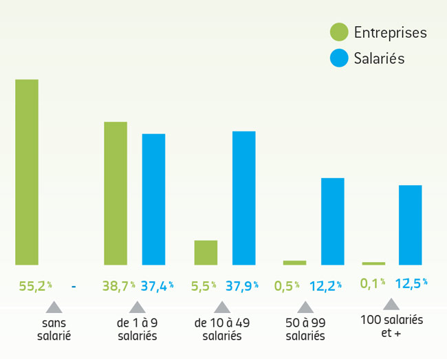
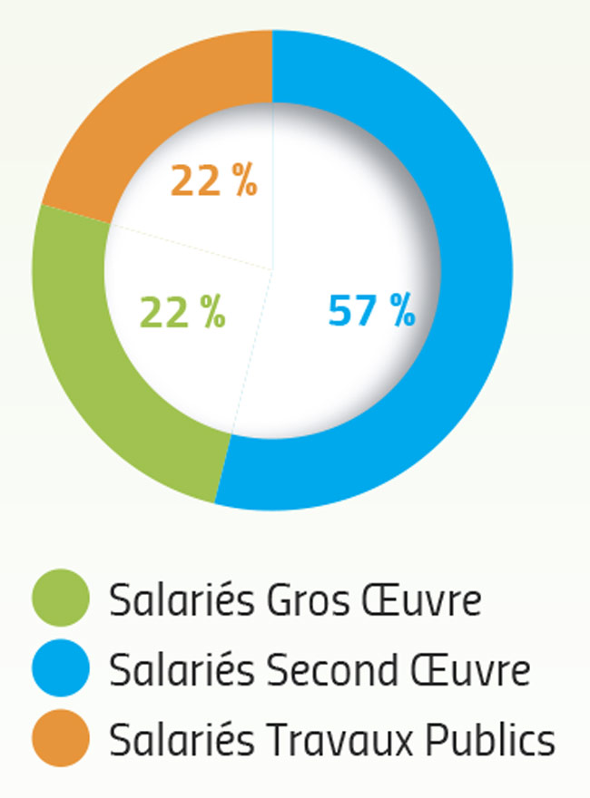

Chiffres clés
AccueilLes entreprises et les salariés du BTP
8 212 entreprises dont 7 974 du Bâtiment et 238 des Travaux Publicsoccupent
27 771 salariés dont
22 119 du Bâtiment et 5 652 des Travaux Publics

Sources : INSEE - Pôle emploi - URSSAF ACOSS - UCF réseau Congés Intempéries
BTP - FNTP, estimation CERA / FFBRA (auto-entrepreneurs non comptabilisés)
Les salariés du btp
- Par qualification
- Par secteur
Bâtiment : 74 % ouvriers, 20 % ETAM, 6 % IAC
Travaux Publics : 67 % ouvriers, 22 % ETAM, 11 % IAC

Sources : ratios UCF réseau Congés Intempéries BTP, estimation CERA / FFBRA
La production bâtiment
2,510 milliards d’euros HT- par activité*
- La construction neuve

En nombre
Logements collectifs 2 897
Logements individuels 2 993
Logements en résidence 306
Total 6 196
En surface
Bâtiments industriels et entrepôts
85 000 m2
Bureaux 57 000 m2
Commerces 60 000 m2
Bâtiments publics 121 000 m2
Autres 114 000 m2
Total 437 000 m2
Sources : CERA / SOES-DREAL Sit@del2 (*chiffres régionaux)
La production travaux publics
760 millions d’euros HT- par type de clientèle*
- par type de travaux*

Travaux de routes, d’aérodromes
et travaux analogues 33,8 %
Adduction d’eau, assainissement,
autres canalisations et installations 20,1 %
Terrassements 17,7 %
Travaux électriques 13,9 %
Ouvrages d’art et équipement industriel 7,0 %
Autres 7,5 %
* chiffres régionaux
Sources : CERA - FNTP enquête d’activité / FRTP octobre 2013